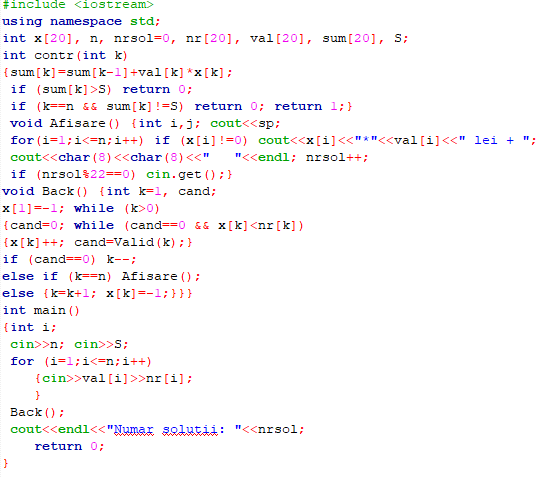
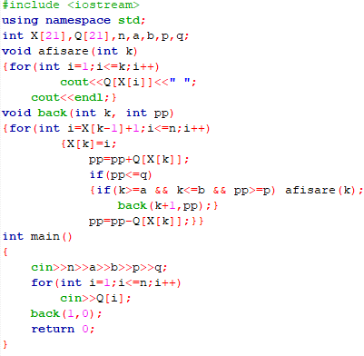
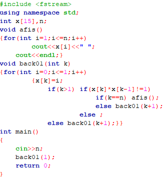

| Pagina principala | Metoda backtracking | Metoda triarii | Metoda greedy |
|---|
Backtracking este numele unui algoritm general de descoperire a tuturor soluțiilor unei probleme de calcul, algoritm ce se bazează pe construirea incrementală de soluții-candidat, abandonând fiecare candidat parțial imediat ce devine clar că acesta nu are șanse să devină o soluție validă. Exemplul de bază folosit în numeroase manuale de liceu și de nivel universitar este problema reginelor, care cere să se găsească toate modurile în care pot fi așezate pe o tablă de șah opt regine astfel încât să nu se atace. În abordarea backtracking, candidatele parțiale sunt aranjamente de câte k regine pe primele k rânduri ale tablei, toate pe rânduri și coloane diferite. Orice soluție parțială ce conține două regine care se atacă poate fi abandonată, deoarece în mod clar restul de regine nu pot fi așezate într-o soluție validă.
Avand un in portmoneu n lei cu laloarea V, afisati la ecran toate modalitatile de platire a sumei s
Se citesc numerele naturale n,a,b,p,q (n<=20, a<=b<=n, p<=q) si apoi n punctaje diferite ale unor intrebari. Sa se afiseze toate modurile in care se poate alege pentru un test un numar de intrebari cuprins intre a si b si care sa aiba punctajul total intre p si q.
Se citeste un numar natural n. Generati si afisati toate combinatiile de cate n cifre binare care nu au doua cifre de 1 alaturate.
